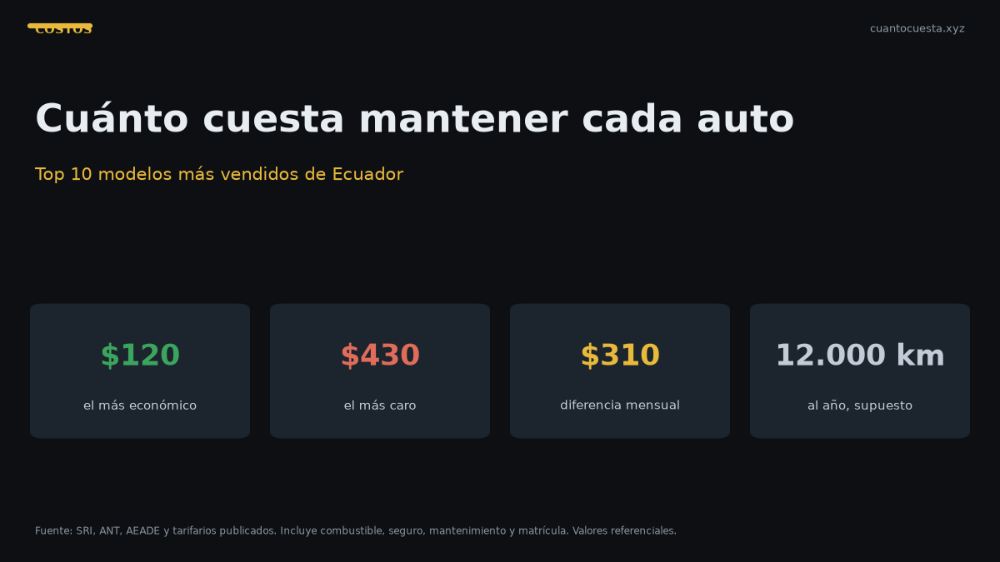

Top 10: cuánto cuesta mantener cada auto al mes en Ecuador (2026)
Desglose del costo mensual real de mantener los autos más vendidos de Ecuador: matrícula, seguro, combustible y mantenimiento. Cifras de fuentes oficiales 2026.

Mantener un auto en Ecuador cuesta entre $120 y $430 al mes, dependiendo del modelo, el kilometraje y el seguro que elijas. La diferencia entre el más económico y el más caro del Top 10 es de casi $300 mensuales — más de $3.500 al año.
Esta guía desglosa el costo real de los diez modelos más vendidos del país, con datos de AEADE, el SRI y tarifarios de concesionarios.
Cómo se calcula el costo mensual
Cuatro rubros concentran casi todo el gasto anual:
| Rubro | Peso típico | Cuándo se paga |
|---|---|---|
| Combustible | 45-60% | Semanal / quincenal |
| Seguro | 12-20% | Anual o mensualizado |
| Mantenimiento y repuestos | 12-18% | Por kilometraje |
| Matrícula e impuestos | 6-10% | Una vez al año |
El combustible es el rubro más pesado, pero el que más duele es la matrícula: llega de golpe una vez al año. Dividir el total anual entre doce y guardarlo mes a mes evita el golpe.
El dato clave que muchos pasan por alto: la matrícula se calcula sobre el avalúo registrado en el SRI, no sobre lo que pagaste ni sobre el valor de mercado actual. Consúltalo por placa antes de presupuestar.
El supuesto de kilometraje
Para comparar de forma justa usamos 12.000 km al año (1.000 km al mes), que es el promedio de uso particular en Ecuador. Con 15.000 o 20.000 km anuales, multiplica el rubro de combustible proporcionalmente.
Precios de combustible vigentes:
| Combustible | Precio por galón |
|---|---|
| Extra / Ecopaís | $3,26 |
| Diésel Premium | $3,20 |
| Súper | $5,61 |
Ecuador vende el combustible por galón, no por litro — detalle que confunde a muchos al comparar consumos.
Top 10: costo mensual estimado
| # | Modelo | Segmento | Precio desde | Costo mensual |
|---|---|---|---|---|
| 1 | Hyundai Grand i10 | Hatchback A | $13.990 | $120 - $180 |
| 2 | Kia Soluto | Sedán B | $15.799 | $135 - $200 |
| 3 | Suzuki Swift | Hatchback B | $15.990 | $140 - $200 |
| 4 | Chery Arrizo | Sedán B | $16.000 | $145 - $210 |
| 5 | Chevrolet Groove | SUV compacto | $19.999 | $175 - $250 |
| 6 | Kia Sonet | SUV subcompacto | $21.599 | $180 - $260 |
| 7 | GWM Poer | Camioneta | $27.000 | $245 - $360 |
| 8 | Hyundai Tucson | SUV mediano | $32.499 | $270 - $400 |
| 9 | Chevrolet D-Max | Camioneta 4x4 | $34.000 | $280 - $410 |
| 10 | Toyota Hilux | Camioneta 4x4 | $38.000 | $295 - $430 |
Desglose de los tres más relevantes
Kia Soluto — el más vendido del Ecuador
Con 8.725 unidades en 2025, es el auto de pasajeros más vendido del país. Motor 1.4 L de 94 hp y un consumo mixto de 15,5 km/l en versión manual.
| Concepto | Costo anual estimado |
|---|---|
| Combustible (12.000 km a 15,5 km/l) | $630 |
| Mantenimiento preventivo | $220 |
| Seguro (4% de $15.799) | $470 |
| Matrícula | $190 |
| Total | $1.510 → $126/mes |
Por qué es barato: el consumo es de los mejores del segmento y su red de repuestos es amplia. La garantía de 10 años o 160.000 km reduce el riesgo de gastos mayores.
Chevrolet Groove — el SUV más vendido
Líder del segmento SUV con 4.063 unidades en 2025. Precio de entrada $19.999 y cuota desde $309/mes en financiamiento.
| Concepto | Costo anual estimado |
|---|---|
| Combustible (12.000 km a 14 km/l) | $698 |
| Mantenimiento preventivo | $280 |
| Seguro (4% de $19.999) | $595 |
| Matrícula | $210 |
| Total | $1.783 → $149/mes |
Su ventaja real es la red de servicio de Chevrolet, presente incluso en ciudades intermedias — algo que importa cuando el taller más cercano de otra marca está a dos horas.
Toyota Hilux — el más caro de mantener del Top 10
| Concepto | Costo anual estimado |
|---|---|
| Combustible (12.000 km a 9 km/l) | $1.260 |
| Mantenimiento preventivo | $450 |
| Seguro (4% de $38.000) | $1.310 |
| Matrícula (avalúo alto) | $420 |
| Total | $3.440 → $287/mes |
A cambio: los intervalos de mantenimiento de Toyota son más largos que el promedio y la retención de valor en el mercado de usados es la más alta del país. Un Hilux de cinco años vale proporcionalmente más que cualquier competidor.
El costo oculto: los mantenimientos escalonados
El gasto no es lineal. Los servicios se encarecen conforme sube el kilometraje:
| Kilometraje | Costo del servicio |
|---|---|
| 10.000 km | $333 |
| 20.000 km | $434 |
| 30.000 km | $489 |
| 40.000 km | $595 |
| 50.000 km | $690 |
| 60.000 km | $800 |
Tarifario oficial de un concesionario ecuatoriano. El costo por kilómetro recorrido ronda los $0,048.
Lectura práctica: si compras un usado con 60.000 km, el próximo servicio será el más caro de la escala. Ese dato debe entrar en la negociación.
Cada cuánto se cambia el aceite en Ecuador
| Tipo de aceite | Intervalo |
|---|---|
| Sintético | 10.000 - 15.000 km o cada 6 meses |
| Semisintético | 7.000 - 10.000 km o cada 6 meses |
| Mineral | 5.000 - 7.000 km o cada 3 a 6 meses |
Condición ecuatoriana: en Quito y Guayaquil (tránsito pesado), en la sierra (altitud) y en costa o Amazonía (polvo y humedad), conviene revisar con mayor frecuencia aunque no se haya alcanzado el kilometraje.
Un cambio de aceite cuesta entre $50 y $90. Un motor nuevo cuesta miles. La matemática es simple.
Costo de mantenimiento por marca
Si estás eligiendo entre marcas, este es el diferencial anual:
| Marca | Modelos | Mantenimiento anual |
|---|---|---|
| Nissan | Qashqai / Versa | $300 - $500 |
| Toyota | Hilux / RAV4 | $300 - $600 |
| Renault | Duster / Koleos | $400 - $600 |
| Mazda | CX-5 / Mazda 3 | $500 - $700 |
| Jeep | Grand Cherokee / Wrangler | $700 - $1.000 |
| RAM | 1500 | $800 - $1.200 |
La diferencia entre la marca más económica y la más cara es de $500 a $700 al año en mantenimiento puro, sin contar combustible ni seguro. En un horizonte de cinco años, eso son hasta $3.500.
Cómo bajar tu costo mensual
- Cotiza el seguro con al menos tres aseguradoras. La variación entre una y otra por el mismo vehículo llega al 40%.
- Presupuesta la matrícula mes a mes. Divide el total anual entre doce y sepáralo. Cuando llegue, ya está pagada.
- Respeta los intervalos de mantenimiento. Un servicio de $300 a tiempo evita una reparación de $1.500 después.
- Revisa la presión de las llantas cada mes. Un neumático desinflado consume hasta 3% más combustible.
- Comprar un modelo con repuestos accesibles (Nissan, Toyota, Renault, Chery) ahorra más a largo plazo que comprar el auto con mejor precio de vitrina.
Lo que este cálculo no incluye
- Depreciación. Un auto nuevo pierde entre 15% y 20% de su valor el primer año. Ese costo es real pero no es un desembolso mensual.
- Reparaciones no previstas. Presupuesta entre $200 y $300 al año para un usado.
- Lavado y estacionamiento. Alrededor de $160 al año si lavas con regularidad.
- Parqueadero en Quito o Guayaquil, que puede superar los $60 mensuales.
Con esos rubros incluidos, el costo real de un auto de gama media en Ecuador ronda los $2.500 anuales en el primer año.
Resumen
| Si buscas... | Elige | Costo mensual |
|---|---|---|
| El más económico de mantener | Hyundai Grand i10 | $120 - $180 |
| Mejor equilibrio costo-precio | Kia Soluto | $135 - $200 |
| Un SUV sin disparar el gasto | Chevrolet Groove | $175 - $250 |
| Camioneta con menor costo total | GWM Poer | $245 - $360 |
Antes de decidir, pide tres datos al concesionario: el costo del servicio de 10.000 km, el del de 20.000 km, y el precio del juego de pastillas de freno. Con esas tres cifras tienes el 70% del costo de mantenimiento proyectado.
Sigue leyendo
Cambio de aceite en Ecuador: cada cuántos km y cuánto cuesta (2026)
Cuánto cuesta el cambio de aceite en Ecuador, cada cuántos km hacerlo según el tipo de aceite y
Cuánto cuesta mantener un auto por marca en Ecuador: tabla comparativa 2026
Tabla del costo anual real de mantenimiento por marca en Ecuador 2026 y cuánto suma esa diferen
Cómo usamos estos datos
Las cifras de esta guía provienen de fuentes públicas oficiales y tarifarios de concesionarios publicados. Los valores son referenciales: tasas municipales, promociones y precios de repuestos varían. Verifica siempre en la entidad o concesionario antes de decidir.